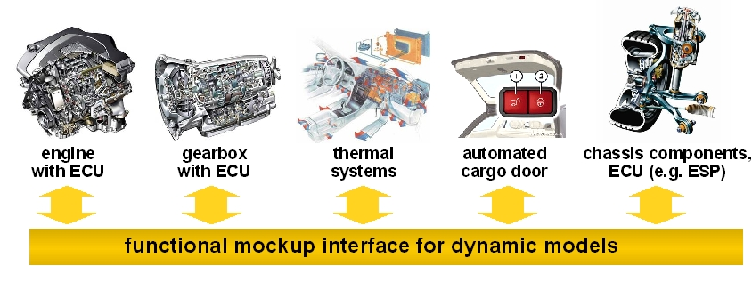
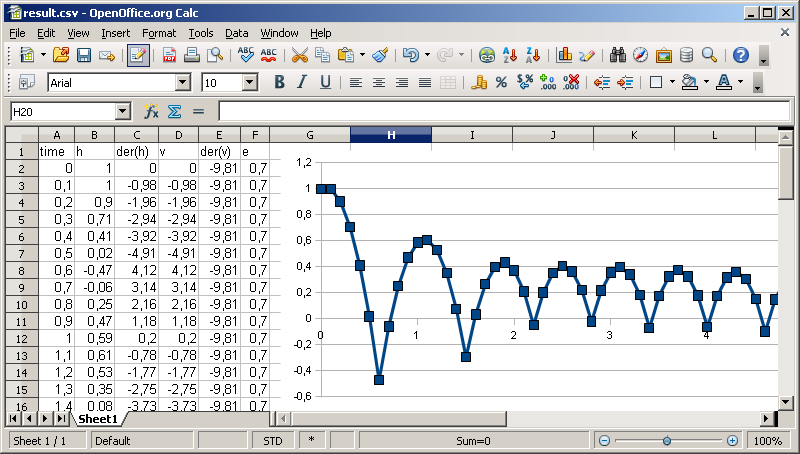
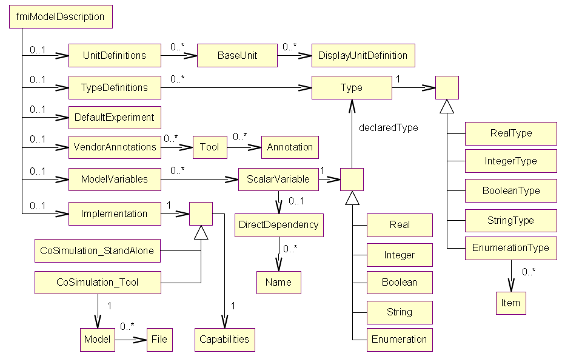

The FMU SDK contains the C sources for various discrete and continuous FMU models, a batch file for compiling and zip'ing these models, an XML parser for parsing the model description of an FMU and two simple simulation programs that run a given FMU and output the result as CSV file.
The FMU SDK can be downloaded from http://www.qtronic.de/doc/fmusdk.zip. For bug reports, questions or comments regarding the FMU SDK, please mail to fmu@qtronic.de. Questions or comments regarding the FMU specification should be sent to info@functional-mockup-interface.org. 
fmusim fmi model.fmu tEnd h loggingOn csvSeparator fmi ........... cs for co-simulation or me for model exchange, required model.fmu ..... path to FMU, relative to current dir or absolute, required tEnd .......... end time of simulation, optional, defaults to 1.0 sec h ............. step size of simulation, optional, defaults to 0.1 sec loggingOn ..... 1 to activate logging, optional, defaults to 0 csvSeparator .. c for comma, s for semicolon, optional, defaults to cThis unzips the given FMU, parses the contained modelDescription.xml file, simulates the FMU from t=0 to t=tEnd, and writes the solution to file 'result.csv'. The file is written in CSV format (comma-separated values), using ';' to separate columns and using ',' instead of '.' as decimal dot to print floating-point numbers. To change the result file format, use the 'csv separator' option. The logging option activates logging of the simulated FMU. The FMI specification does not specify, what exactly to log in this case. However, when logging is switched on, the sample FMUs of the FMU SDK log every single FMU function call. Moreover, the fmusim simulators logs every step and every event that is detected. Example command:
> fmusim me fmu/me/bouncingBall.fmu 5 0.1 0 s FMU Simulator: run 'fmu/bouncingBall.fmu' from t=0..5 with step size h=0.1, loggingOn=0, csv separator=';' Simulation from 0 to 5 terminated successful steps ............ 51 fixed step size .. 0.1 time events ...... 0 state events ..... 14 step events ...... 0 CSV file 'result.csv' writtenTo plot the result file, open it e.g. in a spread-sheet program, such as Miscrosoft Excel or OpenOffice Calc. The figure below shows the result of the above simulation when plotted using OpenOffice Calc 3.0. Note that the height h of the bouncing ball as computed by fmusim becomes negative at the contact points, while the true solution of the FMU does actually not contain negative height values. This is not a limitation of the FMU, but of fmusim_me, which does not attempt to locate the exact time of state events. To improve this, either reduce the step size or add your own procedure for state-event location to fmusim_me. 
<implementation>
element and the closing </fmiModelDescription> tag, because this is added automatically during build.
When done with editing the xml file and xy.c, open a command shell in FMUSDK_HOME\src\model and run the
command build_fmu me xy to build an FMU for model exchange, or build_fmu cs xy to build an FMU for co-simulation.
This should create the FMU file xy.fmu in directory FMUSDK_HOME\fmu\me or FMUSDK_HOME\fmu\cs.
The figure below might help to create or process the XML file modelDescription.xml. It shows all XML elements (without attributes) used in the schema files (XSD) for model exchange and co-simulation. Notation: UML class diagram. 
FMU SDK license Copyright © 2008-2011, QTronic GmbH. All rights reserved. The FmuSdk is licensed by the copyright holder under the BSD License (http://www.opensource.org/licenses/bsd-license.html): Redistribution and use in source and binary forms, with or without modification, are permitted provided that the following conditions are met: - Redistributions of source code must retain the above copyright notice, this list of conditions and the following disclaimer. - Redistributions in binary form must reproduce the above copyright notice, this list of conditions and the following disclaimer in the documentation and/or other materials provided with the distribution. THIS SOFTWARE IS PROVIDED BY QTRONIC GMBH "AS IS" AND ANY EXPRESS OR IMPLIED WARRANTIES, INCLUDING, BUT NOT LIMITED TO, THE IMPLIED WARRANTIES OF MERCHANTABILITY AND FITNESS FOR A PARTICULAR PURPOSE ARE DISCLAIMED. IN NO EVENT SHALL QTRONIC GMBH BE LIABLE FOR ANY DIRECT, INDIRECT, INCIDENTAL, SPECIAL, EXEMPLARY, OR CONSEQUENTIAL DAMAGES (INCLUDING, BUT NOT LIMITED TO, PROCUREMENT OF SUBSTITUTE GOODS OR SERVICES; LOSS OF USE, DATA, OR PROFITS; OR BUSINESS INTERRUPTION) HOWEVER CAUSED AND ON ANY THEORY OF LIABILITY, WHETHER IN CONTRACT, STRICT LIABILITY, OR TORT (INCLUDING NEGLIGENCE OR OTHERWISE) ARISING IN ANY WAY OUT OF THE USE OF THIS SOFTWARE, EVEN IF ADVISED OF THE POSSIBILITY OF SUCH DAMAGE.